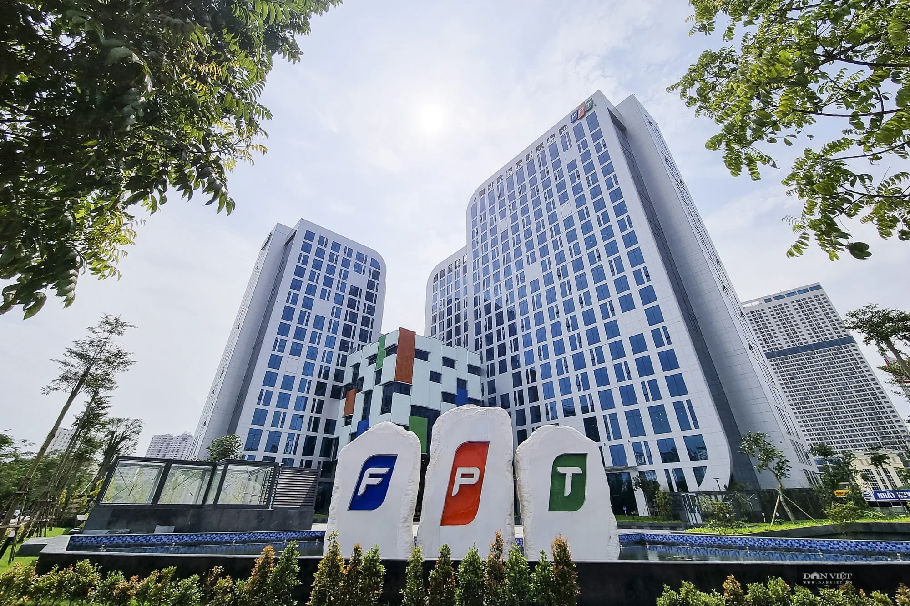
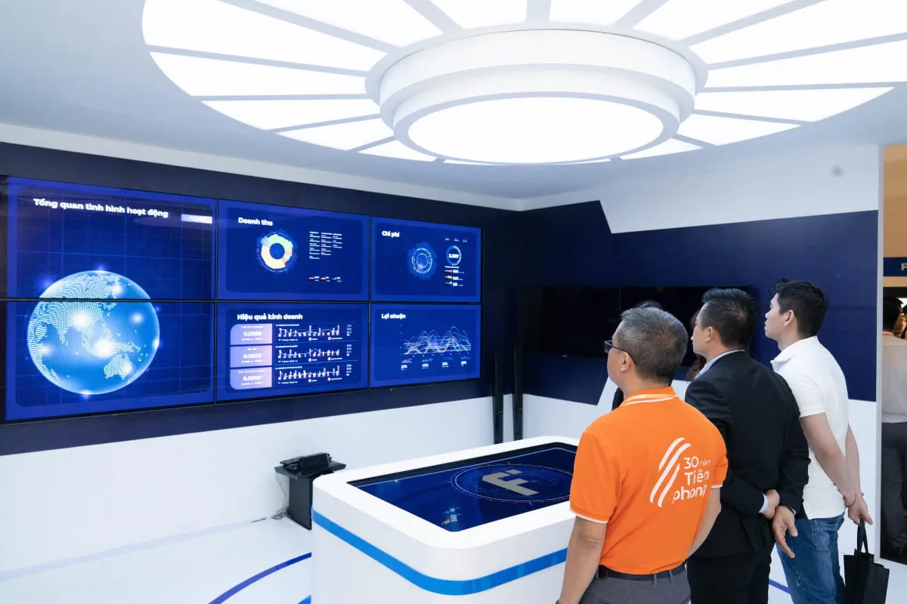
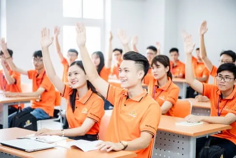
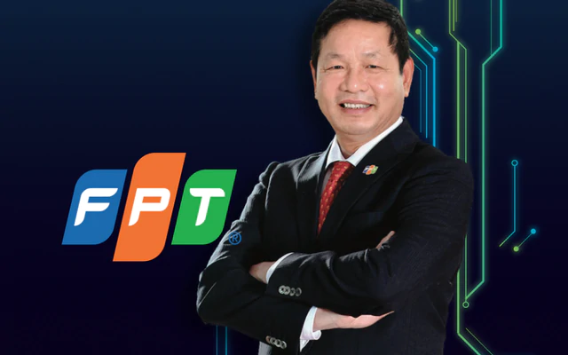

FPT Software・FPT IS・半導体。海外ソフト開発が中心で、最大市場は日本。上期の海外IT売上は+13.4%、新規受注は二桁成長を回復。グループ売上の6割超・利益の柱。
FPT Telecom（FOX）。1998年のISP参入に始まる回線事業で、景気に鈍感な安定収益。※2026年から全部連結→持分法に会計変更（前年比較は遡及修正ベース）。
FPT大学は認可第1号の企業内大学。半導体人材1万人・AI教育の普及を掲げ、成長の源泉である「人」を自前で育てる。上期PBTは二桁成長。
ベトナムと日本の2つのAIファクトリーは稼働1年超で稼働率90%超、2026年Q2に黒字化。この工場で、"数千のスーパーチップ"が動く。AI・データ分析の売上は2025年に1億ドル規模へ。ジェンスン・フアンは「ベトナムは我々の第二の故郷」と語る。ただし全社売上に占めるAIはなお数%で、期待先行の側面には留意。

創業者チュオン・ザ・ビンは、モスクワ大学で数学の博士号を取り、1985年、29歳で12年ぶりに帰国した。家具・圧力鍋・アイロンを抱えての帰国。ノイバイ空港の広い滑走路で牛がのんびり草を食んでいるのを見て、静かに涙を流した——と本人は語る。ビングループのヴオン、ソビコのタオ、マサンのクアンと同じ、旧ソ連で学んだ「東欧組」の一人だ。
当時のインフレは三桁。月給は5ドル程度で、一週間分の食費にしかならない。友人から「ビン、助けてくれ。妻と子ども二人を養う金がない」と言われたことが、起業の直接の引き金だった。資本も資産も現金もなく、あったのは13人の若い科学者だけ。
その会社を、彼らは食品会社として登記した。科学院長に「ハイテクをやりたい」と相談すると、「食品加工技術こそ最高のハイテクだ」と返された——そんな逸話とともに。ドイモイ直後の窮乏から、ベトナム最大のIT企業は生まれた。
「海外売上の主戦場は、日本。」
「日系のDX。その裏に、ハノイのコードがある。」
| 銘柄 | 事業 | 市場 | 時価総額（円換算） | PER | PBR |
|---|---|---|---|---|---|
| FPT／FPTコーポレーション | IT本体（テク・通信・教育） | HOSE | 約6,700億円 | 11.1x | 2.88x |
| FRT／FPTリテール | 小売（FPT Shop・Long Châu薬局） | HOSE | 約1,200億円 | 21.1x | 4.32x |
| FTS／FPT証券 | 証券 | HOSE | 約510億円 | 19.5x | 1.86x |